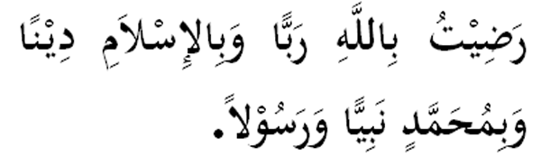

|

Terjemahan "Redhalah aku berTuhankan Allah, beragamakan Islam dan bernabi serta ber-Rasulkan Muhammad." Fadhilat Wirid Daripada Abi Salam (RA), iaitu seorang khadam Nabi (SAW), dia berkata: " Aku mendengar Rasulullah (SAW) bersabda: 'Sesiapa membaca waktu pagi dan petang (bacaan di atas) sebanyak tiga kali adalah menjadi hak ke atas Allah memberi keredhaan'." (Riwayat Abi Daud dan Tarmidzi, An - Nasa'ie dan Al - Hakim) |